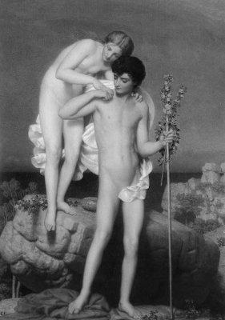
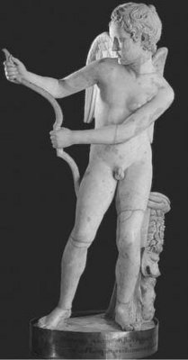

Baştanrı Zeus'un postacısı tanrı Hermes'le sevişen güzel perikızı, günü gelince nur topu gibi bir oğlan çocuğu getirdi düyaya ve Dafnis (Daphnis) adını verdi ona... Ne var ki böyle yarıtanrı doğan bütün bebeklerin başına geldiği gibi, bir tanrıdan gebe kalmanın verdiği günah duygusu ve çevre baskısıyla anası perikızı; götürüp bir ormana bıraktı onu içi yana yana... Yöredeki çobanlar bu güzel bebeği bulduklarında öz oğulları gibi bağırlarına bastılar onu ve "el bebek gül bebek" büyüttüler. Sürülerini otlatırken yanlarından hiç ayırmadıkları Dafnis, biraz daha serpilip gelişince, koyun keçi sürülerini tek başına otlatmaya başladı. Bu arada tanrıça Artemis, ormanda avcılık üzerine dersler veriyordu ona arasıra. Çobanların tanrısı keçi ayaklı Pan da flüt çalmasını; tanrı Apollon ve teyzeleri olan öteki perikızları da şiir düzmenin, lir çalmanın inceliklerini öğrettiler...
Çoban Dafnis, keçi ve koyunlardan oluşan kendi sürüsüyle birlikte, güneş tanrısı Helyos'un inek sürüsünü de otlatıyordu severek. Çünkü güneş en sevdiği, hiç ayrılmadığı tek tanrıydı onun için... Onun ışıklarıyla oynaşıyor, onlarla şekillendiriyordu yaşadığı çevreyi. Sürülerini otlatırken de günışığının tetiklediği coşkuyla kavalını çaldığında ya da içinden gürleyerek gelen şiirlerini, tanrı armağanı flütü eşliğinde ezgilere dönüştürdüğünde, çevredeki yırtıcı hayvanlar bile hemen uysallaşıyor; nerelerdeyseler apar topar gelip onun çevresine doluşuyorlardı. Hepsi de can kulağıyla dinlemeye başlıyordu bu ezgileri... Üstelik hem yakışıklılığı, hem de coşkulu şiirlerinin ve ezgilerinin büyüsüyle, genç kızların ve denizkızlarının gönlünde de her geçen gün daha fazla yer ediyordu... Ne var ki çoban Dafnis; gönlünü çelmek isteyen, ona yaklaşan hiçbir genç kıza fazla yüz gönül vermiyordu! Çünkü tanrıça Artemis'in ona aşıladığı bakir kalma tutkusunu kendi günlük yaşamında da aynen uyguluyordu. Ne var ki doğanın ve günışığının doyumsuzluğunu şiirlerine ve ezgilerine nakışlamak, onun yaşamının tek amacı gibiydi. Bu yüzden zamanının büyük kısmını, kırlarda ormanlarda sürüleriyle ve flütüyle baş başa kalarak geçiren müzisyen çoban Dafnis'in bu mutluluğu, ne yazık ki pek uzun sürmedi... Aşk tanrıçası Afrodit; onun tanrıça Artemis'in etkisiyle kendini kadınlardan uzak tutmasına çok içerledi. Hele hele evren güzeli bir aşk tanrıçası olarak kendisini hiç umursamaması da haliyle çok ağrına gidiyor; kıskançlığı ve öfkesi her gün daha da şahlanıyordu. Sonunda Afrodit; güzel perikızı Lika'ya (Lyca) deli divane tutulması için, Eros aracılığıyla aşk okları saldı müzisyen Dafnis'in saf yüreğine. Çok geçmeden de güzel Lika ile Dafnis, aşk dolu coşkulu günler yaşamaya başladılar dağlarda bayırlarda. Dafnis öylesine mutluydu ki, bir başka kadına yüz gönül vermeyeceği konusunda sevgilisi Lika'ya ant üstüne ant içerek söz verdi... Hem de cehennemin Stiks Irmağı üstüne!..

Eli çiçekli Dafnis, bir perikızıyla
Sırılsıklam aşk içinde yaşayan ozan Dafnis; sevgilisi perikızı Lika üstüne coşkulu ezgiler dillendiriyordu durmadan; yeni yeni şiirler üretiyordu. Ama bir süre sonra Afrodit; bu kez bir başka perikızına tutulması için yeniden aşk okları saldı ozan Dafnis'in yüreğine. Hem de en yakıcı oklardan! Bu yüzden de Dafnis; haliyle sevgilisi Lika'dan gün gün uzaklaşmaya, bir başka perikızıyla düşüp kalkmaya başladı. Olup bitenleri öğrenen Lika da, sözünü tutmayan vefasız çoban Dafnis'in gözlerini kör etti!..
Artık hem çok sevdiği günışığını ve sürülerini görememenin acısı, hem de ilk sevgilisine verdiği sözü tutamamanın ezikliği, ona yepyeni buruk şiirler, yanık yanık ezgiler esinliyordu. Bu yolla ürettiği şiirler de dilden dile dolaşıyordu... Ne var ki yitirdiği sevgilisinin ve gözlerinin yokluğuna daha fazla dayanamadığı bir gün, yakınındaki bir dağın doruğuna tırmandı. Oradan da önündeki o büyük uçuruma bırakıverdi kendini!..
Ölümünden sonra birçok ozan, özellikle Teokritos ve Vergillius; kavalıyla sürüleri bile büyüleyen Dafnis üstüne birçok şiir yazdılar. Bu tür çoban ve doğa şiirlerine de onların ilk yaratıcısı olarak Dafnis'in adını verdiler. Dafnis'in canına kıydığı günü dillendiren bir şiirinde;
"Bir tek çoban bile o acı günlerde,
Sürmedi boğalarını ırmaklara!
(...) Ey Dafnis, inledi o gün senin ölümüne
Afrika'daki aslanlar bile!" diyordu Vergillius...
Olimpos'taki babası tanrı Hermes de onun zamansız ölümüne çok üzüldü haliyle. Ve onu istediği zaman görebilmek için gökyüzünde parlak bir yıldıza dönüştürdü. Sonra da onun kendini parçaladığı uçurumun yakınındaki kayalıklara bir pınar yerleştirdi. Sırf oğlunun anısına hep aksın; akarken de şiirlerini, ezgilerini mırıldansın diye...
Binyıllar süresince Sicilya'daki bütün sürüler ve doğa âşıkları, zaman zaman bu çoban çeşmesinden kana kana içtiler. Ozanlar ve sanatçılar da oraya gidip susuzluklarını giderdiler; çeşmenin yanında uzun uzun oturup dinlendiler. Ve çeşmeden akan suyun söylediklerini şiirlerinde, yontularında, resimlerinde dillendirdiler...

Eros